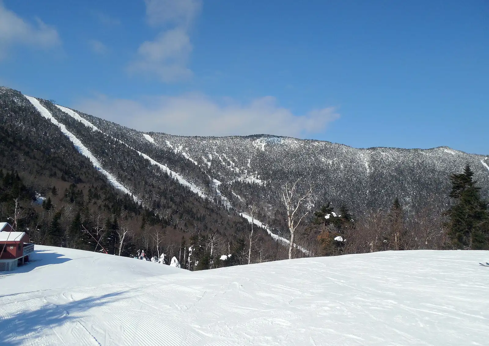

Sugarbush, Warren, Vermont · Ski conditions
Sugarbush Conditions and Webcams Today
Sugarbush's webcams today, its opening day, and kid facts: lift ticket prices, lesson ages from 3 and childcare from 6 weeks. From the south, Sugarbush's route is I-89 to Exit 9, then Route 100B (it posts no drive time from New York City).
Researched with AI (Miles Rowan) · sources linked and dated · How we check
Sugarbush's own status
For open lifts, check Sugarbush's snow report.
Our webcam read
No cam read from us yet. Cam reads show here only when a recent one has passed a separate automated accuracy check.

Coming for the holidays? Christmas in New York City with kids, free and paid
Plan the day with kids
- Two mountains: Lincoln Peak opens first; Mt. Ellen, Sugarbush's second mountain, plans to open Dec 18, weather permitting.
- Weekend trips: Day School childcare runs Monday to Friday only, and the lower Quad Pack rate is midweek only, so a weekend family plans around kids' lessons (from age 3; check lesson days when you book).
- Tickets: All Mountain tickets cover both mountains and are sold online as eTickets; Mt. Ellen-only tickets start lower. Sugarbush's ticket page shows no child or teen prices.
- Lessons: Kids' Schoolhouse lessons from age 3: Micro Bears (3-4, potty trained), Mini Bears and Sugar Bears up to 12, full day or morning; full days include lunch. Lift ticket and rentals are added when you book; helmets come with rentals. Book ahead.
- Childcare: Sugarbush Day School in the Historic Village: 6 weeks to 3+ years, Monday to Friday with limited spots, mid-December to the end of March. Reservations required by phone; lunch and snacks provided (nut-free).
Lift ticket prices on Sugarbush's pages, read Nov 16:
- All Mountain day ticket (both mountains): from $133 (age band not stated)
- One-day ticket, good any day of the 2026/27 winter: $99 each, limited quantity, no blackout dates (ages not stated)
- Quad Pack: 4 transferable adult All Mountain tickets: $479 midweek (Mon-Fri, not Dec 28-30) or $579 any day, plus 6% tax; no refunds
- SugarXpress ticket card: $6 (the Quad Pack requires one; replacement $6)
From Sugarbush's 2026/27 lift ticket, any-day ticket and Quad Pack pages. Per adult ticket, the Quad Pack works out to about $120 (midweek) or $145 (any day) before tax (our division), against $99 for the any-day ticket (ages and mountains not stated) and from $133 for an All Mountain ticket. The Quad Pack adds 6% Vermont tax; the other pages don't say. The Quad Pack page doesn't say whether all 4 tickets can be used on the same day. No kids' ticket, lesson or childcare prices are posted on the pages we read, so we can't sum a family-of-4 day.
Lift tickets and lessons: Sugarbush posts no kids' ticket, lesson or childcare prices on the pages we read, so check live. See Sugarbush lift tickets.
From Sugarbush Mt. Ellen opening day, Sugarbush lift tickets, Sugarbush any-day ticket offer, Sugarbush Quad Pack, Sugarbush kids' lessons, Sugarbush Day School, Sugarbush directions and Sugarbush Lincoln Peak opening day, read Nov 16.
Getting there from New York City
- Car: from New York and points south, take I-89 north to Exit 9 (Middlesex), then Route 100B; if it isn't too snowy, Exit 3 (Bethel) is an alternative.
- From Albany: I-87 north to Exit 20, per Sugarbush's directions page.
- Between mountains: the free Mad Bus runs between Lincoln Peak and Mt. Ellen.
Closer hills for a day trip: skiing near New York City with kids or skiing near Boston with kids.
If the snow is thin
- Childcare: no refunds for weather while the resort is open; cancel more than 72 hours ahead for a refund, less a cancellation fee.
- Quad Pack tickets: no refunds, all sales final, so buy only for dates you are sure of.
From Sugarbush Day School and Sugarbush Quad Pack, read Nov 16.
Cam by cam
The 5 Sugarbush cam views our reader uses, in our own descriptive words (see Sugarbush's own cam page, as listed in our cam feed Nov 16): Gate House base plaza, Snow stake, Second snow stake, Summit view, Base lodge. Once our reads start, each cam's last read time shows here.
How we read the cams: a program looks at Sugarbush's public webcam pictures and notes only what a picture can show: fresh snow, snow cover, snowmaking, moving lifts, how busy the base looks, visibility and the snow stake. Each read shows its time; after 90 minutes it is marked older, after 6 hours it is hidden. We never say whether terrain is safe, icy, groomed or open; Sugarbush's own report decides that. We don't show the cam pictures or count people.
Sources: Sugarbush webcams · Sugarbush Lincoln Peak opening day · Sugarbush kids' lessons · Sugarbush Day School · Sugarbush directions · Sugarbush Mt. Ellen opening day · Sugarbush lift tickets · Sugarbush any-day ticket offer · Sugarbush Quad Pack (read Nov 16). We haven't skied Sugarbush.